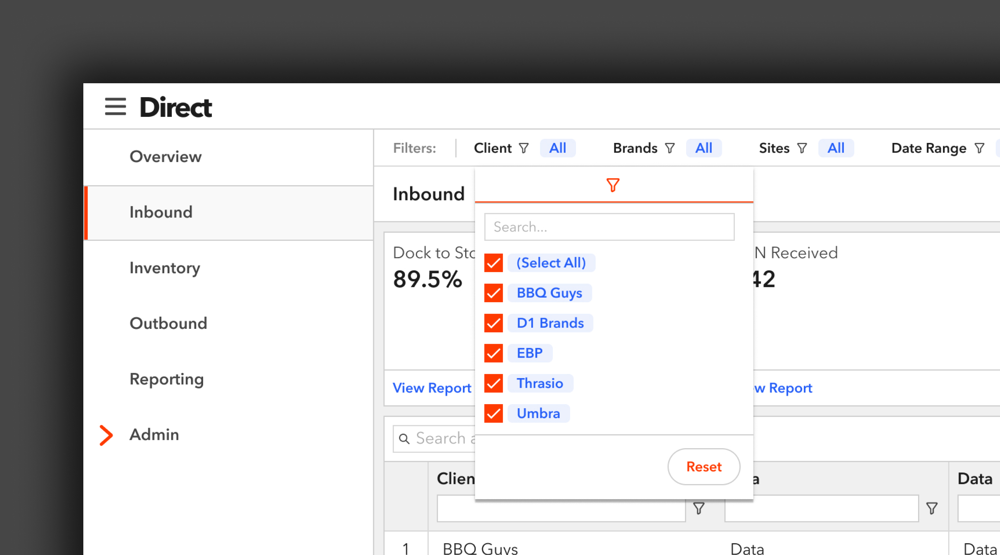
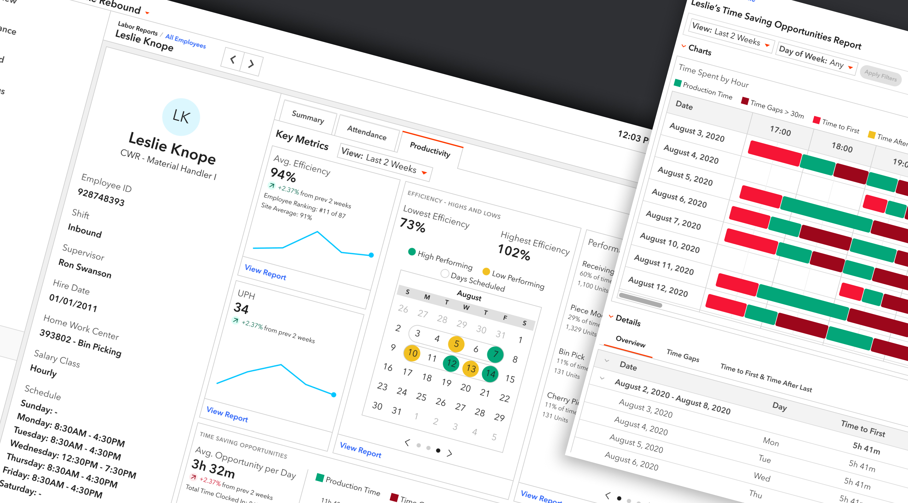

I designed a persistent filter bar that allows users of GXO’s eFulfillment web app, Direct, to filter the entire application by client specific information. This feature was designed to give our primary and secondary personas a view of their business that they’ve never had before.
View
I designed a way for supervisors at a warehouse to evaluate employees on an individual level. With this new design, I was able to take a process for finding an employee's Time Gaps that used to take a supervisor 7 minutes to run, down to a few seconds.